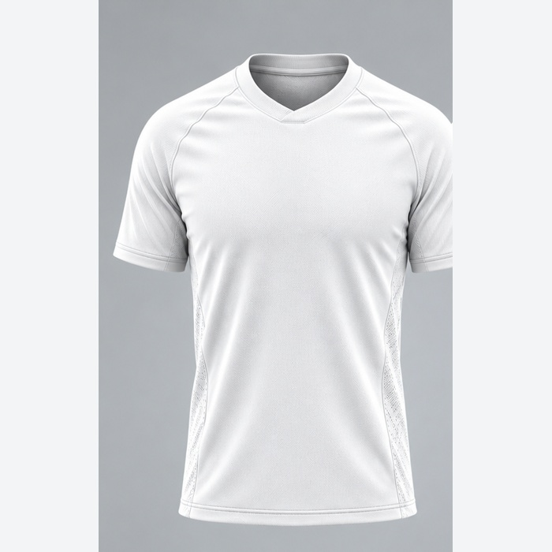
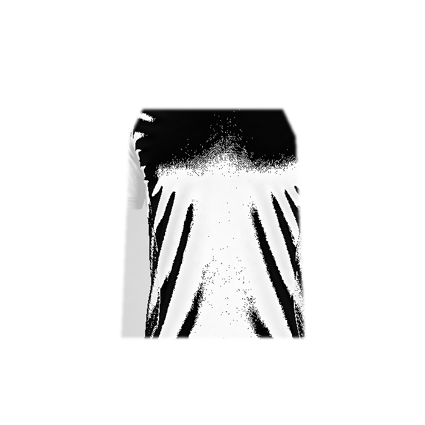
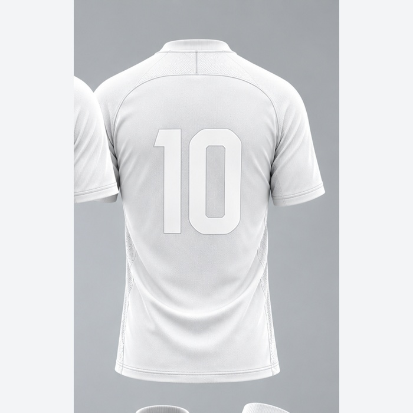
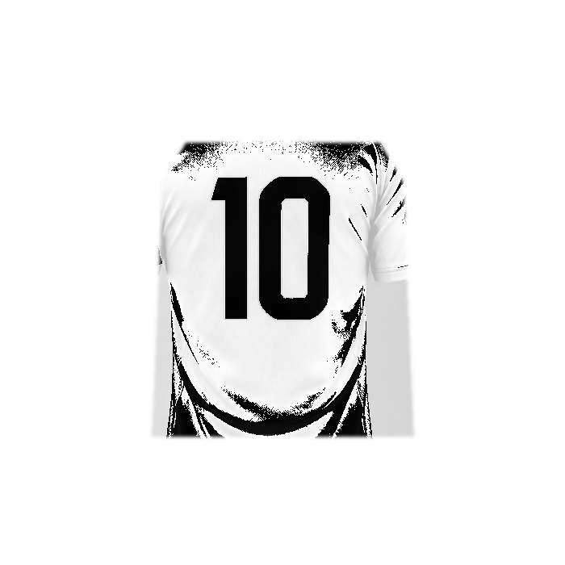

RESULTADO DA MÁSCARA


FRENTE

COSTASObjetivo: validar se a estampa fica limitada ao corpo da camisa e se sombras/dobras preservam o volume. Nesta prova não há patrocinadores, manga, gola, calção ou meião.